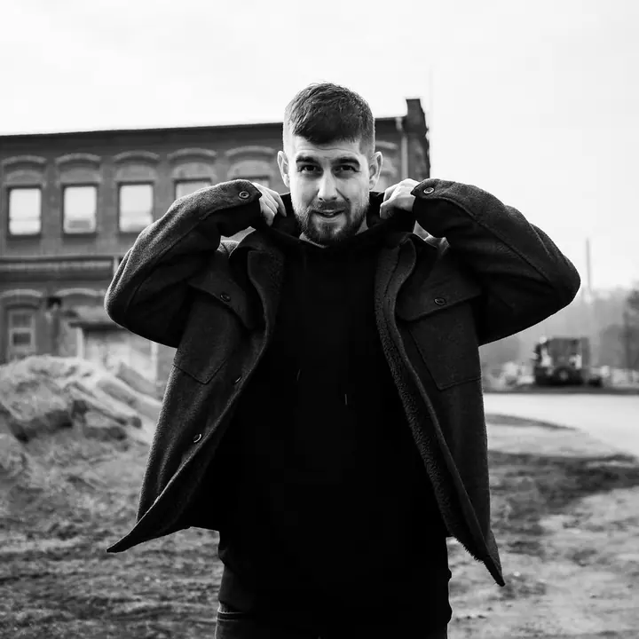
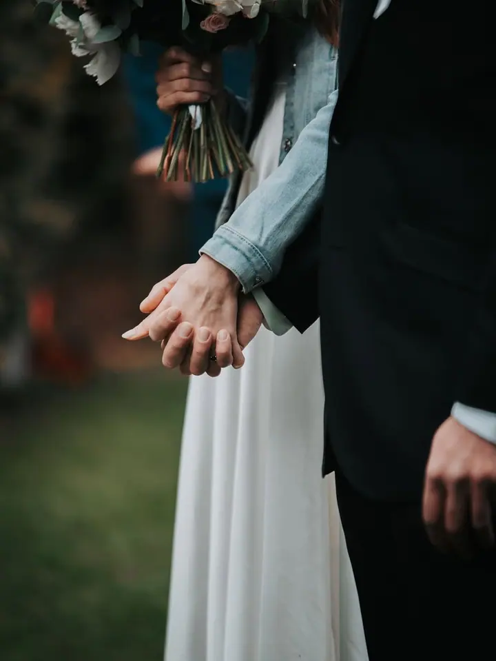

01 / 03
Svatby
Fotím svatby v Plzni i kdekoli jinde v republice. Svatební fotky mají na webu vlastní portfolio a cenu najdete v ceníku pro rok 2026.
Zeptat se na termín→




Svatby, lidé a živá hudba
Zeptat se na termín →(01) Ahoj
Jmenuji se Tomáš Feix a fotím svatby , portréty a koncerty . Doma jsem v Plzni a okolí, ale za focením rád vyrazím kamkoli po republice.
653lidí sleduje mou práci na Instagramu
120příspěvků s fotkami a příběhy
(02) Co fotím
01 / 03
Fotím svatby v Plzni i kdekoli jinde v republice. Svatební fotky mají na webu vlastní portfolio a cenu najdete v ceníku pro rok 2026.
Zeptat se na termín→02 / 03
Fotím portréty venku v přírodě i ve městě, barevně i černobíle. Na webu je najdete v portfoliu pod názvem Lidé.
Zeptat se na termín→03 / 03
Fotím živou hudbu od klubových koncertů po velká pódia. Kapelám i pořadatelům dodám fotky, ve kterých je cítit atmosféra večera.
Zeptat se na termín→(03) Portfolio
Kliknutím fotku zvětšíte · fotografie jsou ilustrační
(04) Postup
Od první zprávy po hotovou galerii.
Krok 1 z 4
Napište mi přes formulář, e-mailem nebo zavolejte. Stačí datum, místo a pár slov o tom, co plánujete.
Krok 2 z 4
Probereme, jak si focení představujete, co je pro vás důležité a jaký rozsah z ceníku vám vyhovuje.
Krok 3 z 4
Na svatbě, koncertě nebo portrétním focení se postarám o to, abyste se mohli soustředit na sebe a na zážitek.
Krok 4 z 4
Fotky pečlivě vyberu a upravím a pošlu vám je v podobě, která se hodí na web, sociální sítě i do tisku.
Ať je to první tanec, nebo poslední song, atmosféra zůstane
(05) Za objektivem
Jsem fotograf z Plzeňska a fotím tři věci, které mě baví nejvíc: svatby, portréty a koncerty. Na první pohled to jsou různé světy, ale všude jde o totéž. O lidi, jejich emoce a chvíle, které se nedají zopakovat.
Na svatbě se snažím být nenápadně u všeho podstatného, u portrétu hledám s člověkem polohu, ve které je sám sebou, a na koncertě chytám energii pódia i publika. Rád pracuji se světlem a atmosférou, ať jde o šero klubu nebo podzimní les.
Fotím v Plzni a okolí i po celé České republice. Jestli plánujete svatbu, chcete nové portréty nebo hledáte fotografa na koncert, napište mi a domluvíme se.
Tomáš
Tomáš Feix · Svatební, portrétní a koncertní fotograf
Aktuální ceník služeb pro rok 2026 je ke stažení v PDF na mém webu. Když si nebudete jistí, co vybrat, rád poradím.
Jsem z Plzeňska, ale fotím po celé České republice. Za svatbou nebo koncertem rád přijedu i dál.
Ano, živou hudbu fotím v klubech i na větších akcích. Napište mi, o jakou akci jde, a domluvíme se.
Nejlépe přes kontaktní formulář, e-mailem nebo telefonem. U svateb doporučuji ozvat se s předstihem, ať je termín jistý.
(07) Kontakt
Napište pár vět o tom, co si představujete, a termín, který se vám hodí.
info@feixfoto.cz